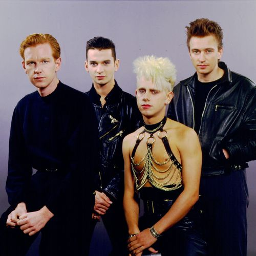

My First HTML page
With styles and semantic tags
Depeche Mode (/dəˌpɛʃ-, diː-, dɪ-/) are an English electronic music band formed in Basildon, Essex in 1980. The group as of now consists of a trio of Dave Gahan (lead vocals and co-songwriting), Martin Gore (keyboards, guitar, co-lead vocals and main songwriting), and Andy Fletcher (keyboards).

Depeche Mode released their debut album Speak & Spell in 1981, bringing the band onto the British new wave scene. Founding member Vince Clarke left after the release of the album; they recorded A Broken Frame as a trio. Gore took over as main songwriter and, later in 1982, Alan Wilder replaced Clarke, establishing a lineup that continued for 13 years.
The band's last albums of the 1980s, Black Celebration and Music for the Masses, established them as a dominant force within the electronic music scene. A highlight of this era was the band's June 1988 concert at the Pasadena Rose Bowl, where they drew a crowd in excess of 60,000 people. In early 1990, they released Violator, an international mainstream success. The following album, Songs of Faith and Devotion in 1993 was also a success, though internal struggles within the band during recording and touring resulted in Wilder's departure in 1995.
Depeche Mode has had 54 songs in the UK Singles Chart and 17 top 10 albums in the UK chart; they have sold more than 100 million records worldwide. Q included the band in the list of the "50 Bands That Changed the World!". Depeche Mode also rank number 98 on VH1's "100 Greatest Artists of All Time".In December 2016, Billboard named Depeche Mode the 10th most successful dance club artist of all time. They were nominated for induction into the Rock and Roll Hall of Fame in 2017 and 2018, and will be inducted as part of the Class of 2020.
| Day | Модуль 2 -ProFrontend | ||
|---|---|---|---|
| План | Тема | ||
| Начало | Конец | ||
| Понедельник | 20:00 | 21:00 | HTML:Списки |
| HTML:Таблицы | |||
| Среда | 19:00 | 22:00 | HTML:Ссылки и картинки |
| Пятница | 21:00 | 22:00 | Домашка |
Series & Movies List
- Sitcom
- Brooklyn Nine-Nine
- The Big Bang Theory
- Modern Family
- Drama
- The Handmaid's Tale
- The Crown
- Drama Movies
- Lady Bird
- 12 Years a Slave